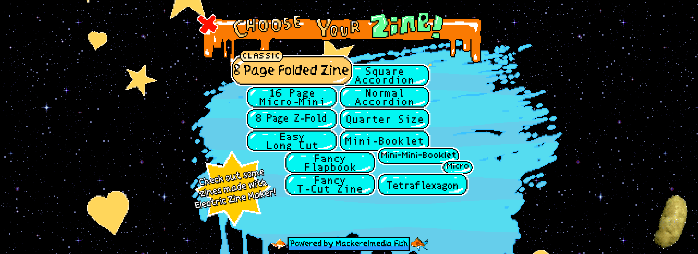

Anxiety, Anxiety, & More Anxiety
Description of the Project
Anxiety, Anxiety & More Anxiety is a poetry zine of poems that show what people with anxiety disorders might be feeling when experiencing anxiety throughout their daily lives. These poetry zines are meant to be dispersed throughout public spaces to bring awareness of people struggling with anxiety. By bringing this to people’s attention I hope people stop and reflect on how they behave towards others, because you never know what people are going through. The image below is what the front and back of the final version look like.
Materials
The materials used to create this project include:
- Bing Chat GPT-4
- Adobe Illustrator
- Adobe Photoshop
- Stable Diffusion v1-5 Hugging Face by runwayml
- Astrobrights 28lb paper
- Astrobrights 110lb paper
- Electric Zine Maker by alienmelon
My Inspiration
My inspiration for this project came from my own struggles with anxiety. I was also inspired by the weird and cursed images generated by AI, because although there are imperfections, these imperfections give the images a certain charm and uniqueness to the AI generated images. As humans we are imperfect, but like AI generated images, we have our own unique, and beautiful characteristics. At least, that is my opinion.
Project Process
To start this project I first researched about the different types of anxiety disorders, and about the different types of poetry styles. This was a crucial step so that I would be informed about the topic and decide on what to input as prompts in order to generate the poems.
After this step I was able to experiment with different AI image generators, such as: Adobe Firefly, Adobe Photoshop, Starry AI and Stable Diffusion. I ended up using Stable Diffusion the most, because it gave me the best sketchy, imperfect look I was aiming for. I also utilized Photoshop’s AI in order to expand and tweak the images. In order to get generated images I inputted lines from the generated poetry into the prompt box. Sometimes I had to tweak these lines in order to get a desired result. Sometimes I just had to create new prompts.
Having enough images I started putting them together into a software called Electric Zine Maker. This zine maker was great to start with and get experience in, but I later transitioned into using Adobe Illustrator and created my own templates. By creating my own template I had better access in editing the zine’s layout.
Once I had the final layout of the zine, I was able to start printing and putting the zine together. And finally I was able to share my poetry zine with the world. Below is a photograph of the poetry zine located somewhere on my college campus where anyone could pick it up.
Challenges
A challenge I had was figuring out the size I wanted my zine to be. Originally I was thinking of the traditional ⅛ page size. However, in my opinion this made the text too small to read. Not to mention that some poems required a lot more space than other ones. This issue was resolved when I decided to use a quarter page sized zine.
Another challenge I faced was figuring out how I wanted the text to look in front of the images I wanted to use. I tried changing fonts, font size, page placement, and background color. I decided to go with a semi-transparent background in order to see the images, because I felt that a fill image added to the look of the zine.
My biggest challenge was figuring out what type of paper to use when printing. Regular paper would be too flimsy for this project since I had to print double sided. Not to mention, that if the paper was not thick/absorbent enough, then printer lines would show or the paper would start to curve. In the end, I found that using Astrobrights 28lb paper was the best for the inside of the zine, while Astrobrights 110 lb was good for the cover page of the zine. These two paper combinations made the zine less flimsy and gave me the best result.
1st Attempt
Quarter Pg Size vs 1/8 Pg Size
Text Format Attempt #1
Text Format Attempt #2
Text Format Attempt #3
Printer Lines

Printer Lines
Curling Edges
Test Print

Revised Test Print
Final Thoughts
The final look is meant to be physical, but I also created an electronic version of the zine in order to let people have digital access to it. After printing a certain amount of copies I also thought this would be a good way to be more environmentally friendly. Click here to view the digital version
This was my first time creating a zine and experimenting with AI. I really enjoyed creating this project, and I have found a new appreciation toward AI generated images, as well as using AI in general. This fun project also made me realize that a lot of human effort is still done even with the use of AI, which I find comforting as a growing artist.